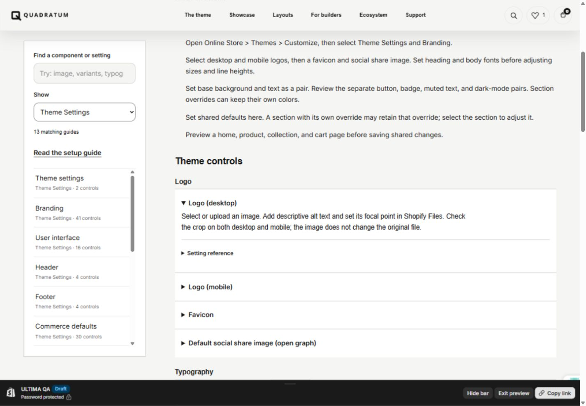

ULTIMA / CHECKLIST AUDIT · 18 OCTOBER 2026
Engineering evidence.
Clear launch gates.
Not cleared for Shopify submission. Code checks pass. Required real-store, measured, public-support and owner evidence is still incomplete. Do not submit a download of the branded QA showroom.
Full evidence JSON · New bug registry · Original 37-entry reconciliation · Official checklist
40/40Regression suites pass
0Theme Check errors in source and five merchant candidates
273Documentation modules
6Open release gates
Support and documentation delivered
Searchable instructions cover 158 source sections, 102 theme blocks and all 225 global controls in 13 groups. Each control includes usage guidance and its schema options, defaults or range. The 12,920 control occurrences include repeated controls in inline block schemas, not 12,920 unique settings. Setup guides cover templates, content, overrides and optional integrations.
Open QA documentation · Open QA support
These are installed in an unpublished, password-protected store. A rendered contact form does not prove inbox delivery or meet the public support gate by itself.
What the brand previews are
The nine active brand links open hosted preview themes inside the shared Quadratum store. EVERREAL is paused. These previews share catalog and administrative state; they are not independently prepared Theme Store preset demo stores. The five selected presets still need their own prepared demo destinations and fresh-install comparisons. Future client stores are not pre-submission evidence.
New findings and implemented changes
| ID / priority | Cause | Implemented change | Files and evidence |
|---|
| CHK-001 / P1 | Search lacked native result filters | Added native list, boolean, price and sort controls with preserved search terms and product-only filter requests. | sections/main-search.liquid; snippets/search-facets.liquid; assets/search-facets.css; locales/en.default.json — Fixture covers prices, selected/disabled states, labels, escaping and reset. Live dock search: five results, three under $100 sorted by price, clear restored all five; mobile had no horizontal overflow. |
| CHK-002 / P1 | Product sections required store-specific metaobject definitions | Replaced custom-definition pickers with optional product metafield namespace/key controls. Manual alternatives and legacy saved references remain. | sections/product-bundles.liquid; sections/product-story.liquid; sections/product-meta-panels.liquid; snippets/product-meta-panel-content.liquid — All schemas scanned; referenced-story fixture and existing bundle/panel suites pass. Real merchant metafield setup still needs acceptance. |
| CHK-003 / P1 | Install configurations contained demo-store resources and promotion | Sanitize only staged candidates: remove store resources, custom destinations and app embeds; replace developer promotion and fictional-store claims with merchant copy; preserve layout, color and type choices. | scripts/submission_portability.py; scripts/build-submission-candidate.py — Five rebuilt candidates pass schema/settings validation, portability scans and Theme Check. Fresh-store visual parity remains open. |
| CHK-004 / P2 | Header/footer menu defaults and editor copy were inconsistent | Set ordinary menu defaults to main-menu/footer and normalize editor capitalization/terminology without changing setting IDs. | sections/header-*.liquid; sections/footer-*.liquid; sections/*.liquid; blocks/*.liquid; config/settings_schema.json — All schema names accepted; menu defaults checked; 117 excessive-settings warnings still require usability decisions. |
| CHK-005 / P1 | Compact lacked native swatch presentation | Render native image/color swatches alongside the native select; synchronize selection and accessible pressed state. | sections/main-product-compact.liquid; assets/product-purchase-sync.js; assets/product-services.css — Swatch click/state fixture passes; actual native swatch data and merchant editor review remain acceptance work. |
| CHK-006 / P1 | Cart page omitted platform accelerated-checkout output | Render Shopify’s additional checkout markup on the cart page when available. | snippets/cart-summary.liquid — Fixture verifies native output. Wallet eligibility and actual checkout require a configured test store. |
| CHK-007 / P1 | Gift-card template lacked QR rendering | Use Shopify’s QR identifier and hosted QR library; render at 160px and retain the existing code, balance, expiry and wallet behavior. | templates/gift_card.liquid; assets/gift-card.js — QR initialization fixture passes. Scanning an actual Shopify gift-card preview remains unverified. |
| CHK-008 / P1 | Global quick view omitted rich media and could offer incomplete large-product choices | Render non-image product media, label form controls, pause media on close, and route gifts or more than 250 variants to the full product form. | snippets/q-quick-view-product.liquid; assets/q-quick-view.js; assets/q-quick-view.css; sections/collection-modern-quick-view.liquid — Rich-media/labels and gift/large-product guards pass. Real video, model and provider playback need device testing. |
| CHK-009 / P1 | Four footer variants omitted the native Shopify credit | Add the unmodified platform powered_by_link to every footer variant. | sections/footer-one.liquid; sections/footer-two.liquid; sections/footer-three.liquid; sections/footer-four.liquid — All five footer sources checked; installed QA footer displays the credit. |
| CHK-010 / P2 | Merchant support and control-by-control instructions were missing | Build a searchable owner’s manual with setup steps, all schema controls, defaults/options/ranges, block compatibility and a native support form. | sections/documentation-hub.liquid; sections/theme-support.liquid; assets/documentation-hub.*; assets/q-doc-*.json; scripts/build-merchant-documentation.py — 273 generated modules; 158 sections, 102 theme blocks, 13 Theme Settings groups and 225 global controls. Desktop/mobile and on-demand guide loading checked. Public hosting, delivery and support operations remain open. |
| CHK-011 / P2 | Brand links implied separate demo stores | Label destinations Open hosted preview and explain that designs share a store; EVERREAL remains paused. | templates/page.brands.json; templates/index.json; scripts/refine-quadratum-showroom.py — Shared-store previews are not counted as independent preset demos or benchmark stores. |
| CHK-012 / P2 | Social gallery presets linked to platform homepages | Clear the three placeholder social destinations in preset configuration. | sections/social-media-ugc-hashtag-gallery.liquid — Schema validation passes; merchants supply their own social destinations. |
Package and test evidence
| Target | Errors | Warnings | Saved settings |
|---|
| source | 0 | 560 | Pass |
| quadratum | 0 | 341 | Pass |
| morrow | 0 | 341 | Pass |
| northstar | 0 | 341 | Pass |
| kinvar | 0 | 341 | Pass |
| vantier | 0 | 341 | Pass |
Source verification uses a byte-identical snapshot of all eight theme folders plus listings, with SHA-256 hashes checked against the checkout. This avoids recursively indexing engineering output and historical build caches, which exhausted the CLI’s default memory in a direct repository scan. All theme files are retained and no check rules are suppressed. The five candidate checks inspect their separate fresh staged packages.
Warnings remain: each merchant candidate has 117 excessive-setting, 144 variable-name, 36 Liquid-complexity, 30 orphaned-snippet, 10 unused-assign, 3 block-ID and 1 remote-asset warnings. No warning category was suppressed to claim readiness. See raw Theme Check reports for file/line details. The source also contains showroom and development snippets excluded from merchant packages.
Tests use explicit Shopify adapters; they verify source contracts and browser-like fixtures. They do not prove real payments, email delivery, app behavior, every image crop or cross-browser acceptance.
All 22 checklist areas
| Area | Status | Project evidence and remaining work |
|---|
| Distribution | Owner gate | Merchant candidate excludes showroom marketing. Distribution/exclusivity history has not been attested. |
| Originality | Owner and design gate | Original implementation history and component inventory exist. Code provenance and visual differentiation have not been certified. |
| Design quality | Partial | Spacing, responsive showroom, editor wording and commerce presentations improved. Five independent preset designs still need final art-direction and usability review. |
| Commerce features | Partial | Fixtures cover variants, native swatches, gift recipients, pickup, selling plans, unit prices, cart rules, recommendations, search and rich-media markup. Real platform/service cases remain open. |
| Theme architecture | Source checked | Required templates, JSON section architecture, header/footer groups, app/Custom Liquid insertion and five listing configurations exist. Candidate validation passes; fresh install acceptance remains open. |
| Measured speed and accessibility | Blocked by missing benchmark | No benchmark store or raw Lighthouse acceptance reports. No numeric score is claimed. |
| Page journeys | Partial | Home/product/collection/blog/article/page/search/cart/password/404/gift-card sources covered by scans and targeted fixtures. A complete real-content journey across every preset is not signed off. |
| Behavior consistency | Partial | 40 regression suites pass. They exercise fixtures/adapters and do not certify every service or every editor combination. |
| Device/browser coverage | Open | Current IAB desktop/mobile checks are evidence for that engine only. Safari, Firefox, Edge, Samsung and social in-app browser coverage is not complete. |
| Assets | Partial | Readable first-party assets and Shopify-hosted theme assets retained. One remote YouTube thumbnail warning and actual media/provider behavior need final disposition. |
| Search metadata | Source checked | Title, description, canonical, social metadata and product structured-data implementation exist. Final catalog metadata and all public routes need a release crawl. |
| Accessible interactions | Partial | Skip link, labels, focus handling, keyboard fixtures and reduced-motion logic exist. Complete contrast, screen-reader and Lighthouse acceptance is pending. |
| Social presentation | Source checked | Social links/sharing and metadata exist; placeholder social homepage destinations cleared. Final supplied imagery and destinations need content review. |
| Editor configuration | Partial | All saved values validate; custom-definition dependency and menu defaults repaired. Sentence case improved. 117 excessive-settings warnings are an unresolved usability risk. |
| Typography | Source checked | Shopify font pickers and available bold/italic variants are rendered. Final preset line breaks and visual loading behavior remain part of browser review. |
| Color controls | Partial | Global foreground/background pairs and section overrides exist. Every shipped preset and interactive state still needs measured contrast review. |
| Image adaptation | Partial | Responsive image helpers, dimensions and lazy-loading controls exist. No complete focal-point/crop audit for all preset content is claimed. |
| Preset identities | Owner gate | Five selected names: Quadratum, Morrow, Northstar, Kinvar, Vantier. Package structure passes; name availability/trademark clearance is not certified. |
| Versioned release | Open | Work remains on ultima/part-1. Candidate manifests are hashed. Final release SHA, notes and submission ZIP must follow closure of the remaining gates. |
| Preset destinations | Blocked by missing stores | Nine hosted historical previews share one mixed catalog; EVERREAL is paused. They are not five separately prepared public preset demo stores. |
| Merchant help | Built; public gate open | Searchable manuals and contact form installed in unpublished QA. Password protection prevents calling these final public support URLs; delivery is not verified. |
| Support operations | Owner gate | Support scope and form exist. Named responder, monitored inbox, coverage and response process have not been supplied. |
Release gates
GATE-01 · A separate Shopify benchmark development store and measured reports
Owner + engineering
Import the official benchmark dataset, install the frozen merchant candidate, obtain its public preview, run the prescribed mobile/desktop measurements, retain raw reports and fix failures.
GATE-02 · Five real preset demo destinations and install parity
Owner + design + engineering
Prepare the five preset stores in the appropriate Partner store type, use licensed catalogs/imagery and test payments, compare each fresh install against its corresponding demonstration and validate all public navigation.
GATE-03 · Real commerce, editor and browser acceptance
Engineering + owner for service configuration
Verify native account component, app blocks, configured search/collection filters, pickup, gift recipient delivery, QR scan, selling plans, accelerated checkout, native swatches, large products and rich media in the required device/browser matrix. No real charge or customer message is authorized by this report.
GATE-04 · Public documentation/support and operating coverage
Owner + engineering
Host the completed pages at permanent public URLs; update theme metadata; verify form delivery with explicit test-message authorization; assign the inbox and response coverage.
GATE-05 · Rights, provenance, distribution, preset identity and listing evidence
Owner
Confirm code origin and distribution, document image/product rights, resolve naming and listing assets, and remove remaining questionable content. The 50-product EVERREAL quarantine is not a rights clearance for the rest of the catalog.
GATE-06 · Editor complexity and remaining warnings
Design + engineering
Review high-control sections with merchant tasks, simplify or conditionally expose advanced settings without breaking existing presets, and disposition warnings with evidence. Do not disable checks to make counts look clean.
Measured acceptance procedure
Follow Shopify’s benchmark procedure: prepare its development-store dataset, install the frozen candidate, generate a shareable preview and append pb=0. Measure home, product and collection on mobile and desktop, using three runs and the median for each page. Retain raw results and the simple average: performance at least 60, accessibility at least 90. No results have been invented.
Next release sequence
- Retain fixes, documentation and audit evidence on ultima/part-1. Keep main at its recorded baseline.
- Create the benchmark and five public preset demonstration environments before claiming acceptance. The ten-brand showroom remains a separate marketing/gallery destination.
- Use the same fixed runtime for each store; apply only its catalog, media and preset configuration. Never merge whole historical demo branches into the shared runtime.
- Close device/service acceptance, measured performance, editor usability, rights and public support gates. Record each result against an immutable candidate manifest.
- Build one clean merchant submission package with five presets and listings; compare it against the final demo stores. Do not download the branded QA showroom as the submission package.
- After all gates close, request owner release approval for final merge/publication/submission. No main merge or theme publication was performed in this pass.
Baselines and limits
Branch: ultima/part-1
Starting HEAD: cf42b029d06d17e53d50e12f21e269bb4a729c33
HEAD when report generated: cf42b029d06d17e53d50e12f21e269bb4a729c33
Main baseline: a2af1499177a83af6753795648fc286020fb2af3
Theme ID 146655674452 remains unpublished. Merchant candidates contain current working-tree runtime and hashed manifests. The final commit includes this report; its own SHA cannot be embedded in itself. No submission ZIP is cleared.
Installed documentation

Evidence files